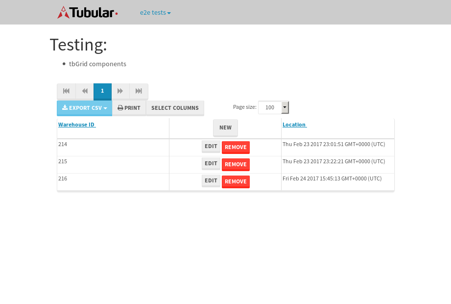

tbColumn.Grid Sorting - 26.988sTests: 5Skipped: 0Failures: 0 should sort data in ascending order then on descending order when sorting by Order Id column - 5.319sTests passed: 100.00%should order data in ascending order when click-sorting an unsorted text column - 4.889sTests passed: 100.00%should order data in descending order when click-sorting an ascending-sorted text column - 5.659sTests passed: 100.00%should order data in ascending order when click-sorting an unsorted date column - 5.332sTests passed: 100.00%should order data in descending order when click-sorting twice an unsorted date column - 5.788sTests passed: 100.00%
tbEmptyForm - 3.558sTests: 3Skipped: 0Failures: 0 should have an empty required field - 0.977sTests passed: 100.00%should not be able to click on save - 0.525sTests passed: 100.00%should load default value for numeric field - 0.458sTests passed: 100.00%
Tubular Filters.tbColumnFilter - 110sTests: 12Skipped: 0Failures: 0 should cancel filtering when clicking outside filter-popover - 8.663sTests passed: 100.00%should disable Value text-input for "None" filter - 6.684sTests passed: 100.00%should disable apply button for "None" filter - 6.863sTests passed: 100.00%should decorate popover button when showing data is being filtered for its column - 11.998sTests passed: 100.00%should correctly filter data for the "Equals" filtering option - 7.82sTests passed: 100.00%should correctly filter data for the "Not Equals" filtering option - 9.171sTests passed: 100.00%should correctly filter data for the "Contains" filtering option - 9.129sTests passed: 100.00%should correctly filter data for the "Not Contains" filtering option - 10.076sTests passed: 100.00%should correctly filter data for the "Starts With" filtering option - 7.174sTests passed: 100.00%should correctly filter data for the "Not Starts With" filtering option - 6.842sTests passed: 100.00%should correctly filter data for the "Ends With" filtering option - 7.302sTests passed: 100.00%should correctly filter data for the "Not Ends With" filtering option - 6.914sTests passed: 100.00%
Tubular Filters.tbColumnDateTimeFilter - 136.02sTests: 12Skipped: 0Failures: 0 should cancel filtering when clicking outside filter-popover - 7.261sTests passed: 100.00%should disable Value text-input for "None" filter - 6.512sTests passed: 100.00%should disable apply button for "None" filter - 6.942sTests passed: 100.00%should clear filtering when clicking on Clean button - 17.514sTests passed: 100.00%should decorate popover button when showing data is being filtered for its column - 12.124sTests passed: 100.00%should correctly filter data for the "Equals" filtering option - 7.293sTests passed: 100.00%should correctly filter data for the "Not Equals" filtering option - 7.096sTests passed: 100.00%should correctly filter data for the "Between" filtering option - 12.402sTests passed: 100.00%should correctly filter data for the "Greater-or-equal" filtering option - 12.417sTests passed: 100.00%should corretlly filter data for the "Greater" filtering option - 12.112sTests passed: 100.00%should correctly filter data for the "Less-or-equal" filtering option - 11.909sTests passed: 100.00%should correctly filter data for the "Less" filtering option - 11.943sTests passed: 100.00%
Tubular Filters.tbColumnOptionsFilter - 79.746sTests: 3Skipped: 0Failures: 0 should cancel filtering when clicking outside filter-popover - 8.513sTests passed: 100.00%should decorate popover button when showing data is being filtered for its column - 11.912sTests passed: 100.00%should filter column-elements in accordance to the selected filter when selecting a single option - 48.452sTests passed: 100.00%
Tubular Filters.tbTextSearch - 49.017sTests: 5Skipped: 0Failures: 0 min-chars is not set - 1.051sTests passed: 100.00%should filter data in searchable-column customer name to matching inputted text, starting from 3 characters - 6.905sTests passed: 100.00%should filter data in searchable-column shipper city to matching inputted text, starting from 3 characters - 11.985sTests passed: 100.00%should show clear button when there is inputted text only - 6.913sTests passed: 100.00%should clear filtering when clicking clear button - 16.391sTests passed: 100.00%
tbForm related components.tbCheckboxField - 6.897sTests: 2Skipped: 0Failures: 0 should save changes on "SAVE" - 3.335sTests passed: 100.00%should discard changes on "CANCEL" - 2.052sTests passed: 100.00%
tbForm related components.tbDropDownEditor - 11.904sTests: 5Skipped: 0Failures: 0 should set initial input value to the value of "value" attribute when defined - 1.875sTests passed: 100.00%should show the component name value in a label field when "showLabel" attribute is true - 1.746sTests passed: 100.00%should show a help field equal to this attribute, is present - 1.656sTests passed: 100.00%should submit modifications to item/server when clicking form "Save" - 3.229sTests passed: 100.00%should NOT submit modifications to item/server when clicking form "Cancel" - 2.306sTests passed: 100.00%
tbForm related components.tbTextArea - 16.41sTests: 7Skipped: 0Failures: 0 should set initial input value to the value of "value" attribute when defined - 2.046sTests passed: 100.00%should be invalidated when the number of chars is not in the range of "min" and "max" attributes - 2.413sTests passed: 100.00%should show the component name value in a label field when "showLabel" attribute is true - 1.82sTests passed: 100.00%should show a help field equal to this attribute, is present - 1.96sTests passed: 100.00%should require the field when the attribute "required" is true - 2.018sTests passed: 100.00%should submit modifications to item/server when clicking form "Save" - 3.274sTests passed: 100.00%should NOT submit modifications to item/server when clicking form "Cancel" - 2.129sTests passed: 100.00%
tbForm related components.tbDateEditor - 14.305sTests: 6Skipped: 0Failures: 0 should set initial date value to the value of "value" attribute when defined - 2.071sTests passed: 100.00%should be invalidated when the date is not in the range of "min" and "max" attributes - 2.443sTests passed: 100.00%should show the component name value in a label field when "showLabel" attribute is true - 2.015sTests passed: 100.00%should show a help field equal to this attribute, is present - 1.814sTests passed: 100.00%should submit modifications to item/server when clicking form "Save" - 2.374sTests passed: 100.00%should NOT submit modifications to item/server when clicking form "Cancel" - 2.864sTests passed: 100.00%
tbForm related components.tbTypeaheadEditor - 17.506sTests: 7Skipped: 0Failures: 0 should show an options list when there is an API-info/component entered-data - 2.41sTests passed: 100.00%should select the option clicked - 2.206sTests passed: 100.00%should show a "delete" button when an option/match is selected, and delete the option if button is clicked - 2.429sTests passed: 100.00%should show a label value equal to the component name when "showLabel" attribue is true - 1.943sTests passed: 100.00%should require a value when "require" attribute is true - 2.379sTests passed: 100.00%should submit modifications to item/server when clicking form "Save" - 3.548sTests passed: 100.00%should NOT submit modifications to item/server when clicking form "Cancel" - 1.875sTests passed: 100.00%
tbForm related components.tbSimpleEditor - 21.218sTests: 9Skipped: 0Failures: 0 should set initial input value to the value of "value" attribute when defined - 2.204sTests passed: 100.00%should be invalidated when the number of chars is not in the range of "min" and "max" attributes - 2.437sTests passed: 100.00%should show the component name value in a label field when "showLabel" attribute is true - 1.647sTests passed: 100.00%should set input placeholder to the value of "placeholder" attribute - 2.069sTests passed: 100.00%should validate the control using the "regex" attribute, if present - 2.831sTests passed: 100.00%should show a help field equal to this attribute, is present - 1.704sTests passed: 100.00%should require the field when the attribute "required" is true - 2.071sTests passed: 100.00%should submit modifications to item/server when clicking form "Save" - 2.918sTests passed: 100.00%should NOT submit modifications to item/server when clicking form "Cancel" - 2.761sTests passed: 100.00%
tbForm related components.tbNumericEditor - 17.695sTests: 7Skipped: 0Failures: 0 should set initial component value to the value of "value" attribute when defined - 1.839sTests passed: 100.00%should be invalidated when the entered number is not in the range of "min" and "max" attributes - 2.356sTests passed: 100.00%should show the component name value in a label field when "showLabel" attribute is true - 1.84sTests passed: 100.00%should show a help field equal to this attribute, is present - 2.36sTests passed: 100.00%should require the field when the attribute "required" is true - 2.154sTests passed: 100.00%should submit modifications to item/server when clicking form "Save" - 3.292sTests passed: 100.00%should NOT submit modifications to item/server when clicking form "Cancel" - 2.804sTests passed: 100.00%
tbForm Connection Error NoModelKey - 2.518sTests: 1Skipped: 0Failures: 0 tbForm connection error functionality - 0.545sTests passed: 100.00%
tbForm Connection Error NoServerUrl - 2.865sTests: 1Skipped: 0Failures: 0 tbForm connection error functionality - 0.534sTests passed: 100.00%
tbGridComponents - 8.014sTests: 6Skipped: 0Failures: 1 should add item with newRow method - 2.133sTests passed: 100.00%should add item with newRow method and cancel action - 0.719sTests passed: 100.00%should update item with tbSaveButton - 0.65sFailed: ElementNotVisibleError✗Tests passed: 0.00%should NOT update item on cancel Update action - 0.866sTests passed: 100.00%should remove item with tbRemoveButton - 1.15sTests passed: 100.00%should NOT remove item on cancel Remove action - 1.091sTests passed: 100.00%
tbGridPager.navigation buttons - 9.262sTests: 1Skipped: 0Failures: 0 should perform no action when clicking on the numbered navigation button corresponding to the current-showing results page - 1.384sTests passed: 100.00%
tbGridPager.navigation buttons.first/non-last results page related functionallity - 3.441sTests: 2Skipped: 0Failures: 0 should disable "first" and "previous" navigation buttons when in first results page - 1.576sTests passed: 100.00%should enable "last" and "next" navigation buttons when in a results page other than last - 1.865sTests passed: 100.00%
tbGridPager.navigation buttons.last/non-first results page related functionallity - 4.437sTests: 2Skipped: 0Failures: 0 should disable "last" and "next" navigation buttons when in last results page - 2.459sTests passed: 100.00%should enable "first" and "previous" navigation buttons when in a results page other than first - 1.978sTests passed: 100.00%
tbGridPager.page navigation - 7.798sTests: 5Skipped: 0Failures: 0 should go to next results page when clicking on next navigation button - 2.219sTests passed: 100.00%should go to previous results page when clicking on previous navigation button - 1.458sTests passed: 100.00%should go to last results page when clicking on last navigation button - 1.347sTests passed: 100.00%should go to first results page when clicking on first navigation button - 1.539sTests passed: 100.00%should go to corresponding results page when clicking on a numbered navigation button - 1.234sTests passed: 100.00%
tbGridPagerInfo - 4.705sTests: 2Skipped: 0Failures: 0 should show text in accordance to numbered of filter rows and current results-page - 1.415sTests passed: 100.00%should show count in footer - 0.49sTests passed: 100.00%
tbPageSizeSelctor - 12.007sTests: 4Skipped: 0Failures: 0 should filter up to 10 data rows per page when selecting a page size of "10" - 2.534sTests passed: 100.00%should filter up to 20 data rows per page when selecting a page size of "20" - 1.855sTests passed: 100.00%should filter up to 50 data rows per page when selecting a page size of "50" - 3.288sTests passed: 100.00%should filter up to 100 data rows per page when selecting a page size of "100" - 2.637sTests passed: 100.00%
tbRowSelectable - 11.761sTests: 2Skipped: 0Failures: 0 selected rows - 7.067sTests passed: 100.00%unselected rows - 3.188sTests passed: 100.00%
tbSingleForm - 19.141sTests: 8Skipped: 1Failures: 0 should load correct info - 0s***Skipped***Tests passed: 0%should change customer name - 2.652sTests passed: 100.00%should save it - 2.924sTests passed: 100.00%should clear the inputs - 2.738sTests passed: 100.00%should update - 2.992sTests passed: 100.00%should reset editor - 2.323sTests passed: 100.00%should not save if not Changes - 2.798sTests passed: 100.00%should not be able to click on save - 2.713sTests passed: 100.00%
{kind=link}